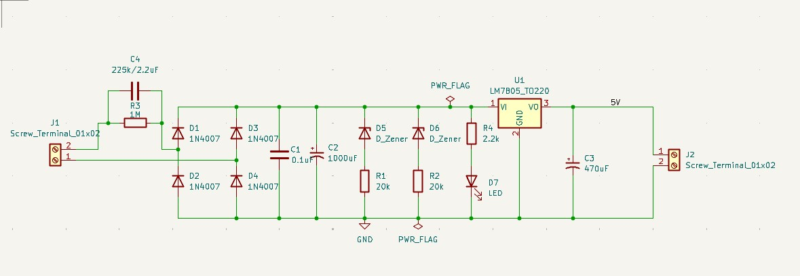
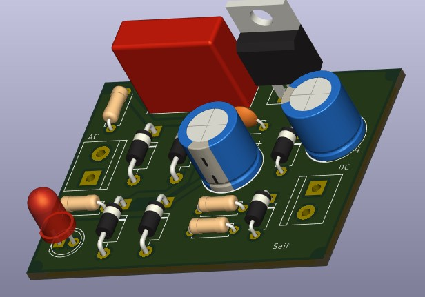
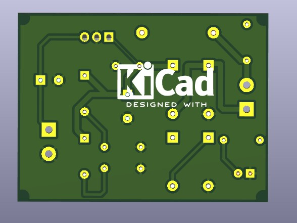

Build, layout and hardware evidence.
The supplied images are kept together as a design case study. The portfolio intentionally avoids adding unsupported electrical specifications beyond the project material supplied.
Every image supplied for this project is included below. Click an image to inspect it at full size.


